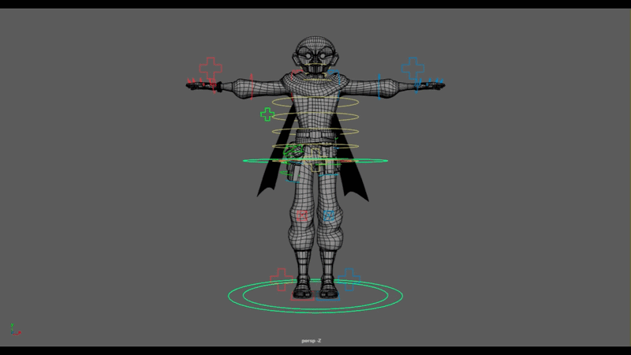

03 / Project detail
Shrineflow
Shrineflow is a student-developed video game created at BYU and released on Steam. I worked on the project as a character rigger, where I was responsible for creating and maintaining the rig for the game's Ninja character.
Ninja Character Rig

For the Ninja, I adapted the same modular rigging workflow I had developed while working on Student Accomplice. Using Maya and Python, I created the character rig and prepared it for use by the animation team and integration into the game's real-time pipeline.
Throughout production, I maintained the rig as the character and animation needs evolved, troubleshooting issues and making updates as needed.
Working on Shrineflow gave me the opportunity to take techniques I had developed for an animated film production and apply them to a game development workflow, where the final character and animation needed to function inside a real-time environment.
Reusing a Rigging Workflow
One of the most valuable parts of the project was being able to reuse and adapt tools and workflows I had already developed rather than approaching the character as an entirely new technical problem.
The modular rigging systems developed during Student Accomplice provided a foundation for the Ninja rig, allowing me to focus more of my time on the needs of the character and production.
This experience reinforced one of the things I enjoy most about technical art: building systems that can extend beyond a single character or project and adapting them to solve new problems.